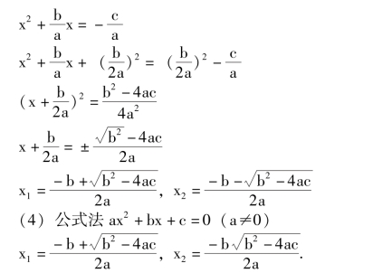
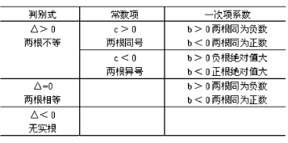
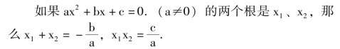
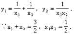
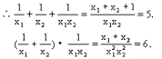
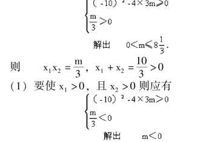

一元二次方程
【一元二次方程】
含有一个未知数，并且未知数的最高次数是2，这样的整式方程叫一元二次方程.它的一般形式是ax2＋bx ＋c＝0，(a≠0).
【一元二次方程的解法】
(1) 因式分解法把方程的一边化为零，另一边因式分解，令每个因式为零，解每个方程.所有的解，就是原方程的解.
ax2＋bx ＋c ＝0⇒a (x－x1) (x－x2) ＝0.⇒x －x1＝0 或x－x2＝0.⇒x ＝x1或x ＝x2.
说明: 一般比较容易分解因式时，常用这种方法.
说明: 一般缺一次项时，常用这种方法.
(3) 配方法用二次项的系数除方程的两边各项；把二次项和一次项移到方程的左边，常数项移到方程的右边；方程两边各加上一次项系数的一半的平方，方程左边变成一个二项式的完全平方，右边化成一个常数项；方程两边同时开方，得到两个一次方程；分别解这两个一次方程，求出两个根.ax2＋bx ＋c ＝0

说明: 求根公式是配方解一元二次方程的结果.当b2－4ac≥0 时有解.
(5) 图象法
①把ax2＋bx ＋c ＝0 变成ax2＝－bx －c，在同一坐标系中作出y ＝ax2和y ＝－bx －c，这两个图象交点的横坐标为原方程的解.②作y ＝ax2＋bx ＋c 的图象(抛物线)，它与x 轴交点的横坐标是原方程的解.
【一元二次方程的根的判别式】
ax2＋bx ＋c ＝0 (a≠0) 中，△＝b2－4ac 叫根的判别式.
(1) △>0 时，方程有两个不相等的实根；
(2) △＝0 时，方程有两个相等的实根；
(3) △<0 时，方程没有实数根.
具体可见下表(a>0 时).

【一元二次方程根与系数的关系】

如果方程x2＋px ＋q ＝0 的两根是x1、x2，那么x1＋x2＝－p，x1·x2＝q.
说明: 一元二次方程根与系数的关系也叫韦达定理.
例 已知方程2x2－3x ＋1 ＝0.不解这个方程，求作一个一元二次方程，使它的根是原方程两根倒数的和；另一根是原方程两根积的倒数.解设原方程的两根为x1，x2，所求方程的根为


所求方程为y2－5y ＋6 ＝0.
例 m 为何值时，方程3x2－10x ＋m ＝0 有(1) 两个正根；(2) 一个正根，一个负根.
解 设原方程的两个根为x1，x2.

(2) 要使x1，x2有一正一负，则应有